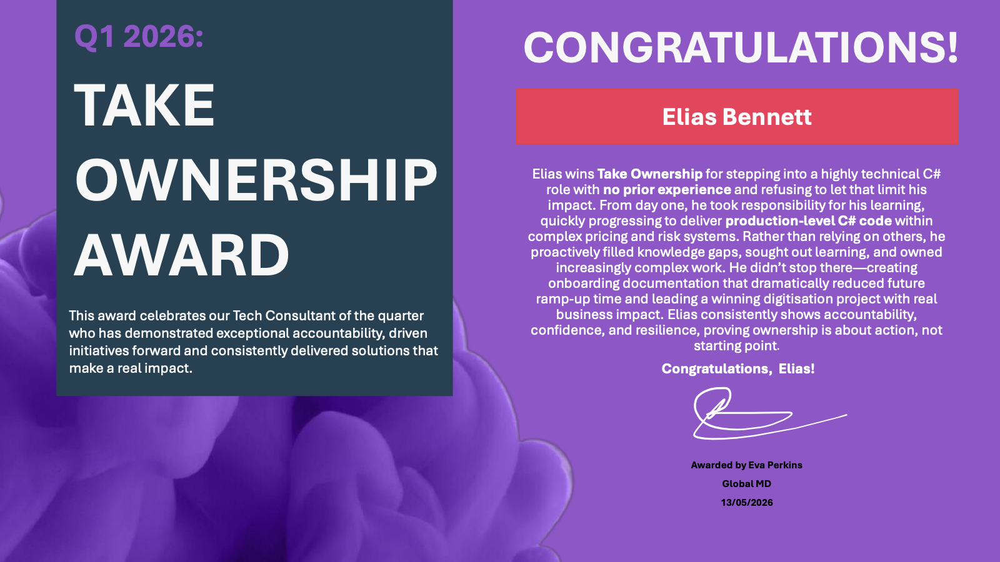

BNP Paribas
Summary
I’m a software engineer in BNP Paribas’s risk division in London. I work in C# on the engines that price and risk-manage trades on CPU and GPU, and I’m the team’s only C# engineer.
The role
The engines run large simulation-based calculations across several asset classes. It’s a big codebase, around 70 projects, and some of the C# is translated to run on the GPU. I joined in July 2025 having never written C#. Today I own implementation and delivery on the C# side, from planning through review.
How the pricing engines work
The problems
- Market data. Loaders written in Java had to be ported to C#, pulling data from several sources into one place and checking it on the way.
- A stale dependency. The live pricing pipeline relied on a data file that was no longer reliably available in production.
- Quant code. Pricing code written by quantitative developers had to be integrated into the engine.
- Two execution paths. The same tests had to run on both CPU and GPU.
Decisions
- Ship the risky change behind a flag, switched off. Removing the dependency touched live pricing, so I put the new path behind a feature flag that defaults to off, added caching and wrote an end-to-end test nobody had asked for. The architect’s view was that the thing to protect was the blast radius, not only correctness.
- Validate the data before trusting it. The commodity loader had ten file types, correlation groups, unit conversions and records linked to each other. Checking links catches orphaned records on load rather than showing up as a strange number in a simulation.
- Give AI work phases. Each stage has its own scoped agent: grill the problem, plan, build test-first, self-review, then a health review.
What changed
I used that workflow to integrate a pricer into the calculation engine in a couple of days — a job that takes an experienced engineer about two weeks. In the bank’s digitisation competition, I led a team of four to co-build a dashboard that cut a 30–40 minute data load to under 5, winning out of five groups and presenting it to the Head of Risk Systems.
What I took with me
I was nominated as an AI Champion in the risk division, and the workflow is now used by several teams across the department. I also won a Take Ownership award. The habit underneath all of it: write down what you’re doing before you build it, and ship it so it’s safe to undo.
